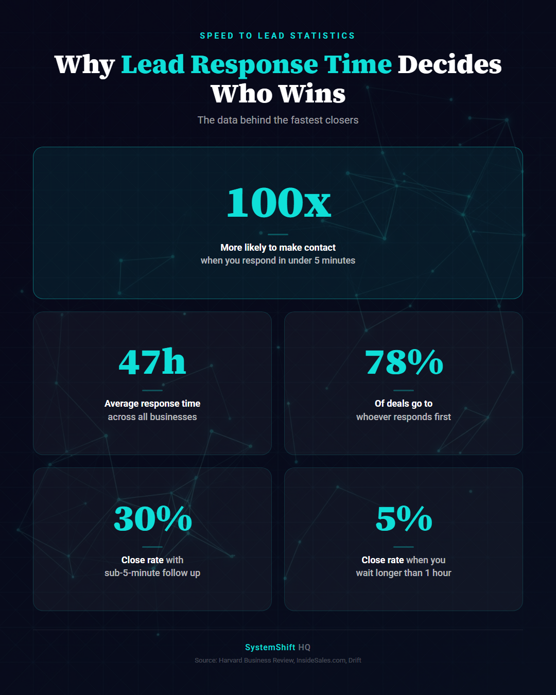

- Responding in under 5 minutes means 100x better contact rates
- The average business waits 47 hours - that's 12+ lost clients per month
- A simple automation system responds in seconds and books while you sleep
Speed to Lead Is the Metric You're Ignoring
Here's a stat that should make you uncomfortable.
The average business takes 47 hours to respond to a new lead.
47 hours. Almost two full days.
By that point, your lead has already talked to three competitors, picked one, and forgotten your name.
According to a Harvard Business Review study, companies that respond within 5 minutes are 100x more likely to make contact than those who wait 30 minutes. Not 2x. Not 10x. One hundred times.
And you're waiting 47 hours.
Speed to Lead Statistics That Prove the Point
Let's do the math.
Say you get 50 leads a month. Industry average close rate on leads contacted within 5 minutes is around 30%. On leads contacted after an hour? It drops to 5%.
- 50 leads x 30% = 15 new clients (fast response)
- 50 leads x 5% = 2.5 new clients (slow response)
That's 12 clients you're losing every single month. Not because your service is bad. Not because your price is wrong. Because you were slow.
If your average client is worth $2,000, that's $24,000 a month walking out the door.

Why Your Lead Follow Up Is Broken
It's not because you're lazy. It's because you're busy.
You're on a job site. You're in a meeting. You're driving. You're eating lunch for the first time today at 3pm.
The lead comes in. You see the notification. You think "I'll get to that."
You don't.
Or you do - three hours later, when the lead has already booked with someone who answered faster.
This isn't a you problem. This is a systems problem.
The Lead Follow Up System That Responds in Seconds
Here's what a speed-to-lead automation actually looks like:
1. Lead comes in (form submission, phone call, Facebook ad, Google ad - doesn't matter the source)
2. Instant acknowledgment - Within 30 seconds, the lead gets a personalized text message and email confirming you received their inquiry. Their name. Their specific request. Not a generic "thanks for reaching out."
3. Smart routing - The lead gets scored and routed to the right person on your team based on service type, location, or deal size. No one has to check a spreadsheet to figure out who should call.
4. Auto-booking - The text includes a link to book directly on your calendar. No back-and-forth. No "when are you available?" Just pick a time.
5. Follow-up sequence kicks in - If they don't book within an hour, they get a follow-up. Then another one the next day. Then a different angle two days later. Five touches over seven days, all automated.
6. You get notified - You see exactly what happened, who engaged, and who needs a personal call. You spend your time on the leads that are ready, not chasing the ones that aren't.
The whole thing runs without you touching it. 24/7. Weekends. Holidays. 3am.
What Changes When You Fix Lead Response Time
We built this exact lead follow up system for a business owner who was getting 40+ leads a month from Google Ads but only closing 3-4.
After the speed-to-lead system went live:
- Response time went from hours to seconds
- Contact rate jumped from 15% to 68%
- Monthly closes went from 3-4 to 11-12
- Zero additional ad spend
Same leads. Same service. Same price. The only thing that changed was how fast and consistently they responded.
The Pieces You Need
You don't need to build this from scratch. Here's what goes into a speed-to-lead system:
- CRM with pipeline management (we typically use GoHighLevel)
- Automation platform connecting your lead sources to your CRM
- SMS and email sequences written in your voice, not robot-speak
- Calendar booking link with smart availability
- Lead scoring so your team knows who to call first
- Dashboard so you can see what's working
The tech isn't the hard part. The hard part is mapping it to your actual workflow so your team uses it and your leads get a great experience.
That's what we do.
Stop Losing Leads You Already Paid For
You're already spending money to get leads in the door. The leads aren't the problem. The response system is.
Fix the speed. Fix the follow-up. Fix the close rate.
Everything else stays the same.
Book a free strategy call and we'll map out exactly what your speed-to-lead system looks like. No fluff. No pressure. Just a plan.
Ready to Automate Your Business?
Book a free strategy call and we'll map out exactly what to build first.
Book Your Call
Join the Conversation